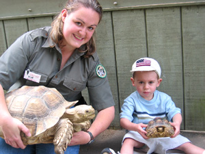

Matthew Lauri of Commack holds a turtle on a recent visit to the Game Farm.
About the Zoo
Welcome to our 35th year as the largest combined zoo and encounter park on Long Island! We offer families a natural environment where they can learn about wildlife and animals through education and entertainment.
The Long Island Game Farm Wildlife and Children's Zoo features hundreds of animals, including a 18-foot giraffe, cougars, Barbados sheep, peacocks, and the only lemurs born and bred on Long Island. Our animal collections include both exotic and indigenous breeds. We have various breeds of monkeys, buffalo, colorful parrots, zebra, aoudads, camels, ostrich, alligator, and much more. Experience the thrill of discovery as you explore nature trails that lead to places like "Bambiland," "The Nursery", and "Old MacDonald's Farmyard".
The Game Farm also has many interactive areas where guests can touch and, unlike most zoos, actually feed the animals! "Please Touch" is the motto in our petting zoo areas where you can pet, cuddle, and bottle feed the baby animals. "Old MacDonald's Farmyard", for example, provides a true barnyard experience where pigs, chickens, ducks, rabbits, and ponies are all within arms reach.
Children can also enjoy one of our carnival-style rides such as the Spinning Teacups, Rio Grande Mini Train or the Antique Carousel. If that's not enough, we offer pony rides as well. Our daily shows and animal activities will round out your day.
2005 Season Schedule
All Times announced at the Park.
| Event | Times |
| Meet the Keeper | 10:15 - 10:45 |
| South American Kinkajou Exhibit | 11:00 |
| Rides Close for Lunch | 12:00 - 12:30 |
| Big Cat Encounter on the Main Stage |
Weekdays: 12:30, 3:00 Weekends: 12:30, 2:30, 4:30 |
| Alligator Jump-A-Roo At Jurassic Swamp |
12:00 and 4:00 |
| Meet the Kangaroos Sponsored by Sabrett |
1:15 |
| Ring-Tailed Lemur Feeding | 2:00 |
| Giraffe Feeding and Fun | 3:15 |
* All show and lecture times announced at the park and are
subject to change due to inclement weather.
**Rides closed daily from 12:00 - 12:30.
The Long Island Game Farm was founded in 1970 by Stanley and Diane Novak and is located on 25 acres of land in Manorville. The Park has grown over the years and has served as a frequent destination of school children that have grown up on Long Island. Each year, over 100,000 guests visit the park. The Game Farm is located in Manorville just off exit 70 on the Long Island Expressway and no more than an hour from just about anywhere on Long Island.